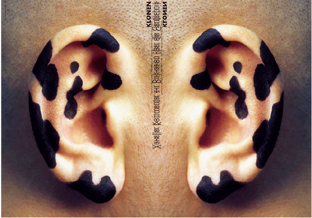

Clon 2
Measures: A0
Technique: Offset
Place and date: Berlin, August 2001
Client: Berlin University of the Arts
Description: For the topic "Clon" of the proseminar of "Humans and Science" staged by the students of the Berlin University of the Arts.

home
back
